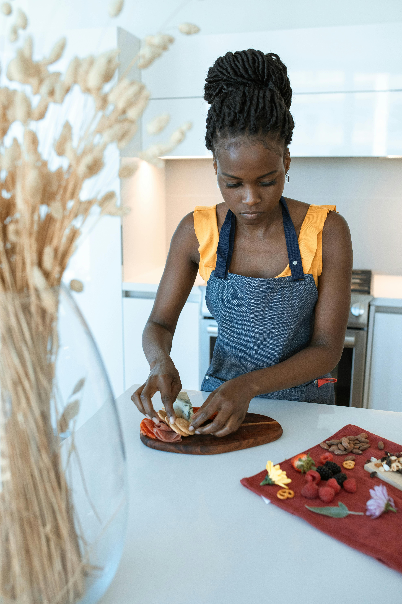

About Fancy Restaurant
Welcome to Fancy Restaurant, where we serve the best food and drinks in town. Our restaurant is located in the heart of the city and is open 7 days a week. We have a variety of food options to choose from and our chef's daily pick is a must try. We also have specials for each day of the week. Our menu includes breakfast, lunch, and dinner options. We also cater to large groups and accept reservations. Contact us today to book your table!

Our Story
Fancy Restaurant was established in 2015 by Chef Marissa Nabii. Chef Marissa has over 20 years of experience in the food industry and has worked in various restaurants around the world. She decided to open Fancy Restaurant to share her love for food with the community. Since then, Fancy Restaurant has become a popular spot for locals and tourists alike. Our mission is to provide our customers with the best dining experience possible.
Our Team
Our team at Fancy Restaurant is dedicated to providing our customers with exceptional service. From our chefs to our waitstaff, everyone works together to ensure great delivery of service